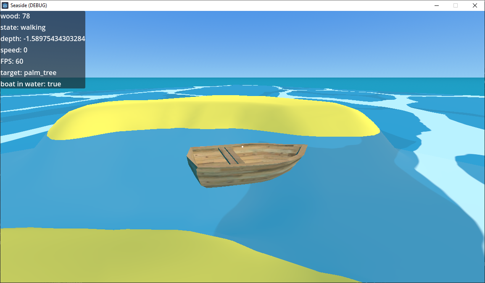

This game is based on the popular theme of pirate combat. The complete idea is that 2 teams of 5 will battle against each other in order to secure victory. The players are to gather resources for building better and stronger ships so they can defeat the opposing team's ship and eventually, base.
The game was built on the Godot engine which uses the GDScript language that is based on Python, the engine is completely free and open-source. Models were created using Blender
Implemented so far is character movement, swimming, water buoyancy and physics, resource collection, boat building and driving.
